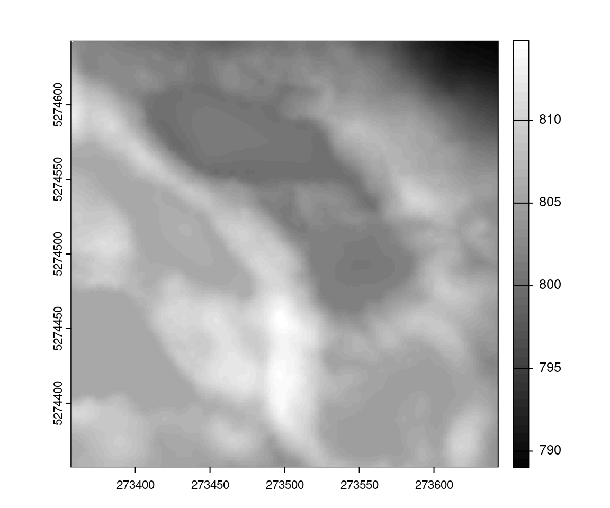
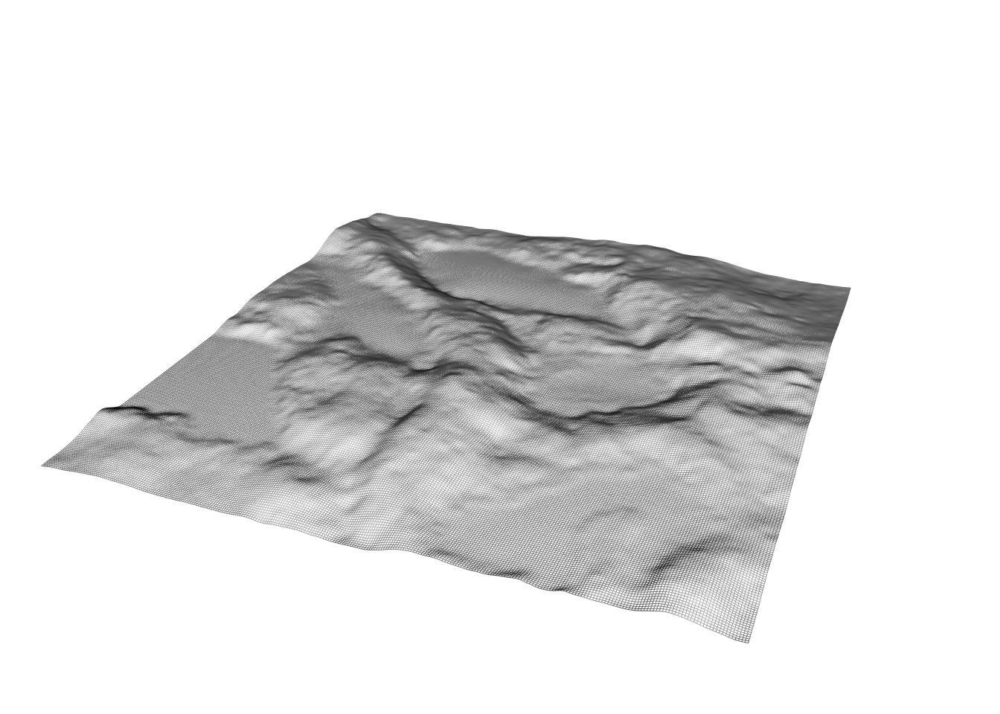

algo <- knnidw(k = 10)
algo
#> Object of class lidR algorithm
#> Algorithm for: spatial interpolation
#> Designed to be used with: normalize_height or rasterize_terrain or p2r or spatial_interpolation
#> Native C++ parallelization: yes
#> Parameters:
#> - k = 10 <numeric>
#> - p = 2 <numeric>
#> - rmax = 50 <numeric>
class(algo) # algo is a function
#> [1] "lidRAlgorithm" "SpatialInterpolation" "function"
#> [4] "omp"20 lidR plugin system
We have seen that lidR has many functions capable of processing a collection of files. Most of these functions support more than one algorithm to achieve a given task.
rasterize_terrain()supportstin(),knnidw(),kriging()rasterize_canopy()supportsp2r(),dsmtin(),pitfree()classify_ground()supportcsf(),pmf(),mcc()locate_trees()supportslmf()segment_trees()supportsdalponte2016(),li2012(),watershed(),silva2016()track_sensor()supportsroussel2020(),Gatziolis2019()- and so on
What if a user wanted to create a new algorithm integration? For example, what about a new algorithm for ground segmentation or tree segmentation or another interpolation method to create a digital terrain model using cubic spline interpolation? Sounds interesting.
With catalog_apply() one can more or less replicate the original functions and apply a new method over a catalog. After all, lidR functions actually use catalog_apply() internally. However this implies a lot of code and is error prone especially for users who are not fully comfortable with the engine.
There is another way to create new algorithms that are fully compatible with lidR functions. This is not documented in the package because the underlying mechanism is not yet fully consistent and is still subject to improvements.
Let’s continue with the bicubic spline interpolation method for creating a digital terrain model. There is a package called MBA that implements bicubic spline interpolation. We will create a function mba() that can be used like any other algorithm:
dtm <- rasterize_terrain(las, algorithm = mba(n = 1, h = 8))20.1 Understanding lidR algorithms
In lidR, an algorithm such as tin(), p2r() or lmf() is a function factory. The output is functions with extra classes so regular users wont immediately recognize that they are functions.
Removing the extra classes we can see its a function and we can see the source code.
class(algo) <- "function"
algo
#> function(las, where)
#> {
#> assert_is_valid_context(LIDRCONTEXTSPI, "knnidw")
#> return(interpolate_knnidw(las, where, k, p, rmax))
#> }
#> <bytecode: 0x589c424700a8>
#> <environment: 0x589c42478f60>
#> attr(,"class")
#> [1] "function"We can see how a function designed to be used in rasterize_terrain() is designed. The signature is
function(las, where)When creating a new algorithm for spatial interpolation, the function factory must return a function similar to what you see above. In the case of spatial interpolation las is a LAS with X Y and Z coordinates of ground points (cleaned of duplicates). where is a data.frame with the X Y coordinates of the location where we want to interpolate Z.
20.2 Creation of the mba algorithm
Now let’s create our mba algorithm.
# mba is our function factory
mba <- function(n = 1, m = 1, h = 8, extend = TRUE) {
# f is created inside mba and receive the ground points in a LAS (gnd)
# and the location where to compute the interpolation (where)
f <- function(gnd, where) {
# computation of the interpolation (see the documentation of MBA package)
res <- MBA::mba.points(gnd@data, where, n, m , h, extend)
return(res$xyz.est[,3])
}
# f is a function but we can set compatible classes. Here it is an
# algorithm for DTM
f <- plugin_dtm(f)
return(f)
}Now let see what happens if we instantiate the mba algorithm:
algo <- mba(h = 6)
algo
#> Object of class lidR algorithm
#> Algorithm for: spatial interpolation
#> Designed to be used with: normalize_height or rasterize_terrain or p2r or spatial_interpolation
#> Native C++ parallelization: no
#> Parameters:
#> - extend = TRUE <logical>
#> - h = 6 <numeric>
#> - m = 1 <numeric>
#> - n = 1 <numeric>We can now use it like any other lidR algorithm:
LASfile <- system.file("extdata", "Topography.laz", package="lidR")
las <- readLAS(LASfile)
dtm <- rasterize_terrain(las, algorithm = mba())
plot(dtm, col = gray(1:50/50))
plot_dtm3d(dtm, bg = "white")
It will even fail nicely if used inappropriately!
rasterize_canopy(las, 1, mba())
#> Error: The algorithm used is not an algorithm for digital surface model.20.3 What about other algorithms?
lidR has algorithms for canopy height models, individual tree segmentation, individual tree detection, sensor tracking, snag segmentation and so on. They all have different behaviours and this is why it’s difficult to document. If you want to create a new algorithm the best first step is to communicate directly with lidR developers :). The lidRplugins package makes heavy use of the plugins system to provide extra methods for diverse tasks.